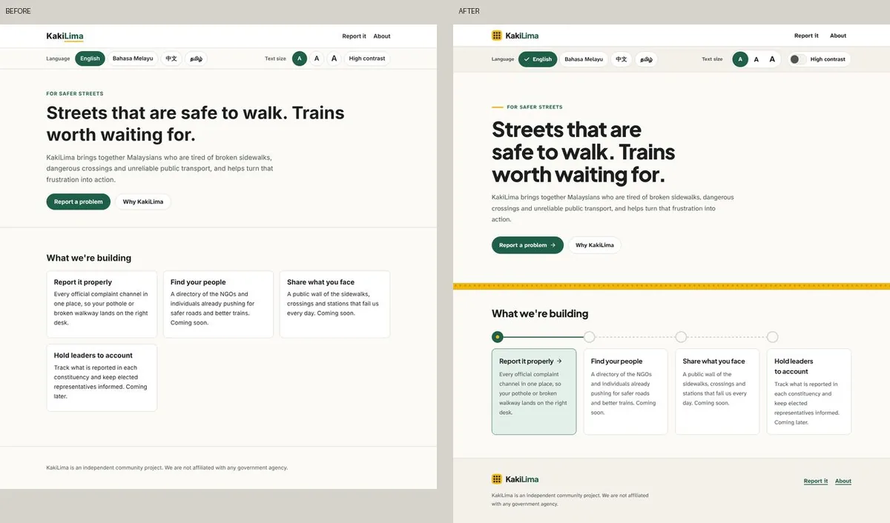
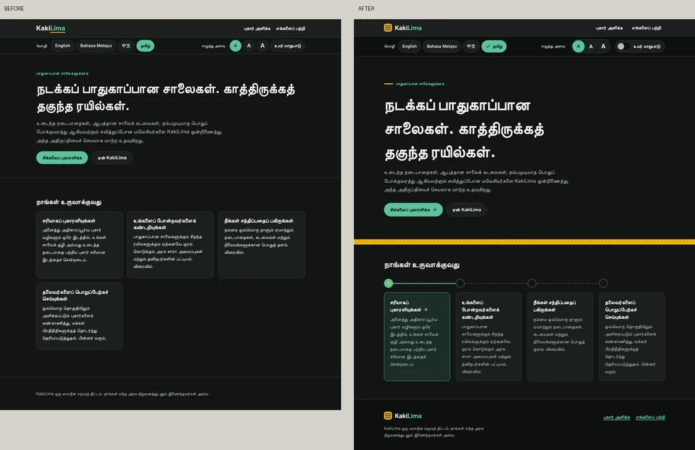
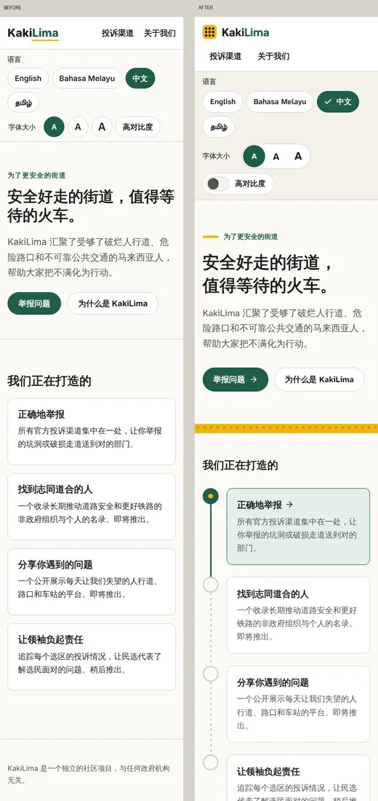
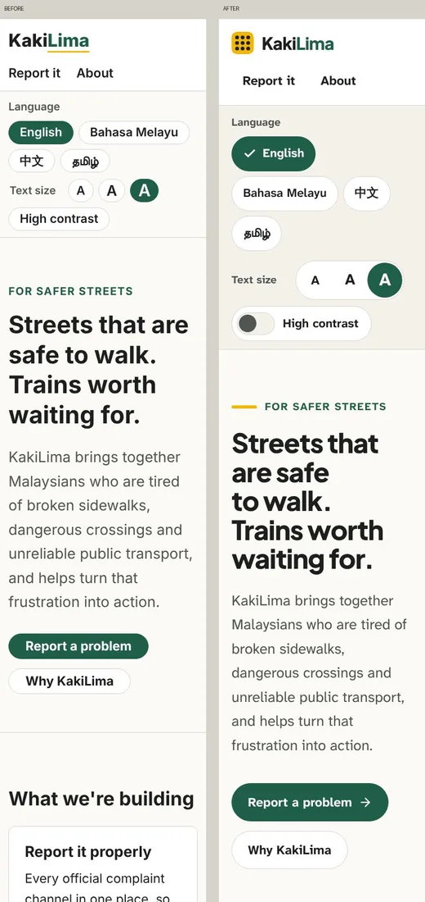
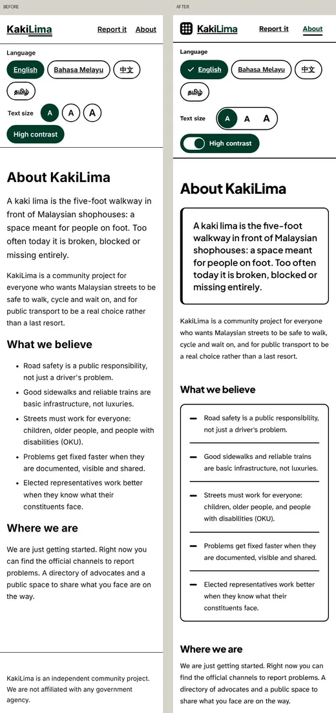
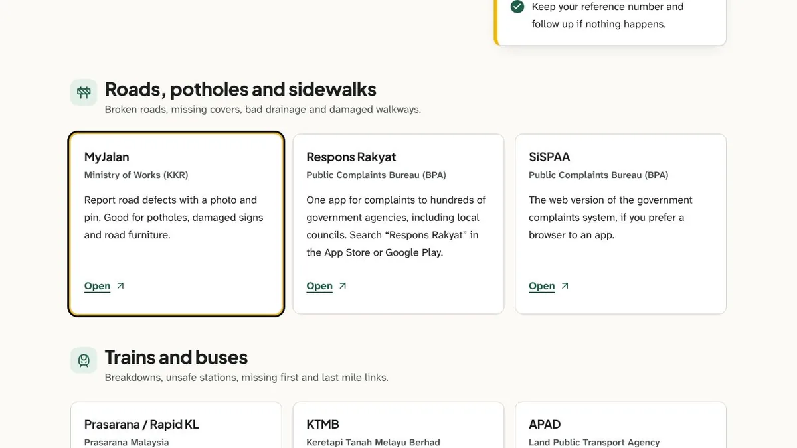
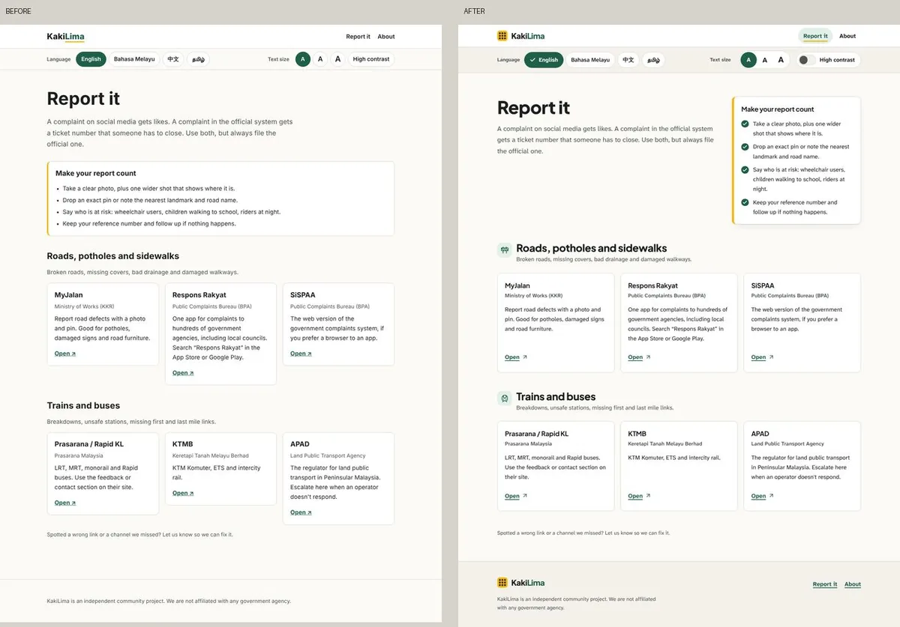

KakiLima is a small community hub for safer streets, walkable sidewalks and better public transport in Malaysia. When something is broken or unsafe, it points you to the right official channel to report it, in the language you read best, whatever your eyesight.

Four languages, properly
The site is in English, Bahasa Melayu, Chinese and Tamil. Visitors to the home page are sent to their browser's language, and their choice is remembered. All the text lives in one file per language, and English defines the shape, so TypeScript flags any sentence missing from the others before it ships.

Accessible first, not accessible later
A site about walkable streets should work for people with low vision too, so the accessibility controls sit right in the header instead of a settings page.
- Three text sizes and a high-contrast mode, saved per browser.
- Atkinson Hyperlegible for body text, a typeface designed for low-vision readers.
- A two-tone focus ring (yellow and near-black, after the GOV.UK design system) that stays visible on any background.
- 44 px minimum tap targets, a skip link, labelled landmarks and the right language set on every page for screen readers.
- Reduced motion respected everywhere. Animations only mark a change, and nothing moves if your phone asks it not to.



One set of tokens, every theme
Supporting light, dark, high contrast and three text sizes across four languages could easily turn into a mess of special cases. Instead, every colour, the border width and the radius are variables, and the themes only change the variables. Components never mention dark mode or contrast at all; Tailwind's default palette is switched off, so the tokens are the only colours that exist.

Where to report
The report page lists the official channels, grouped by what you're reporting: roads (MyJalan, Respons Rakyat, SiSPAA) and public transport (Rapid KL, KTMB, APAD), with what each one handles. The names and links live in one data file, separate from the translations, so they're easy to keep current.

KakiLima is live at kakilima-iota.vercel.app, and the code is on GitHub.